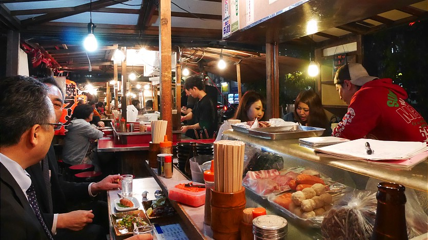

Food Stalls(Yatai)
屋台
Fukuoka's open air food stands (屋台, Yatai) are possibly the city's best known symbol. Yatai can generally seat about seven or eight people and provide an atmospheric outdoor environment to enjoy various foods that are generally simple and filling. There are dozens of yatai scattered across Fukuoka, but the best place to find them is on the southern end of Nakasu Island. Located in the middle of the city, Nakasu Island has a long row of around 20 yatai that are attractively situated along the water.
Typical dishes enjoyed at yatai are grilled chicken skewers (yakitori), hot pot (oden) and most famously Hakata Ramen, a local noodle dish featuring relatively thin ramen noodles in a pork bone based soup (tonkotsu). Various alcoholic drinks are also available, and help make the yatai a great place to get in touch with the locals, although many of the "locals" happen to be Japanese tourists visiting Fukuoka from other parts of Japan.
Yatai are typically open from around 6pm to around 2am, except when the weather is very bad. Many stands close one day of the week. The closure day varies from stand to stand, but is often Sunday. There can be waiting times for popular stands, especially on Fridays and Saturdays.
